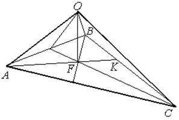

П 4.1 №1
Задан тетраэдр  . В базисе из
ребер , и
найдите координаты вектора , где –
точка пересечения медиан основания .
. В базисе из
ребер , и
найдите координаты вектора , где –
точка пересечения медиан основания .
. В базисе из
ребер , и
найдите координаты вектора , где –
точка пересечения медиан основания .РЕШЕНИЕ:
Воспользуемся правилом треугольника:
.
Здесь – середина ребра ; точка находится
на расстоянии  длины медианы считая от вершины
длины медианы считая от вершины
 .
.
длины медианы считая от вершины
.
Но
Подставим в :
,
то есть =.
Ответ: .